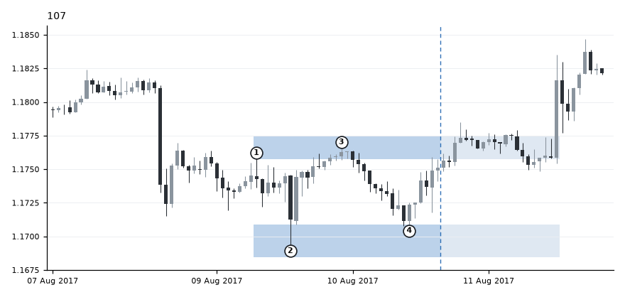
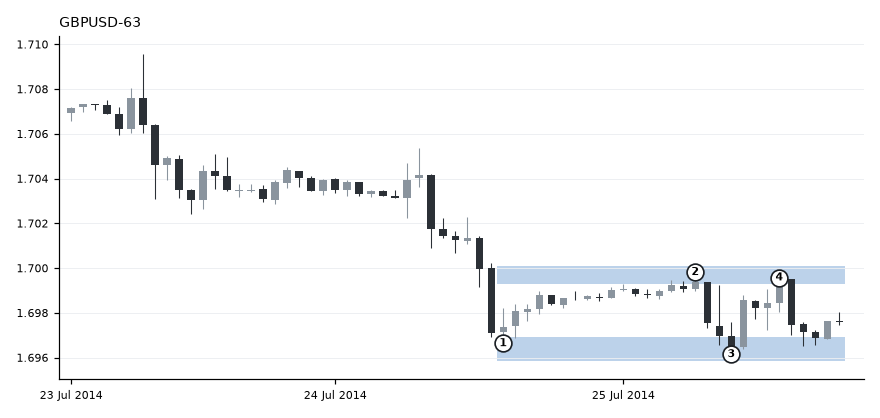
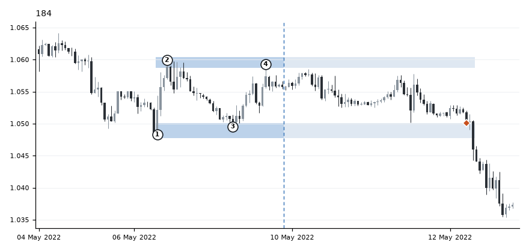
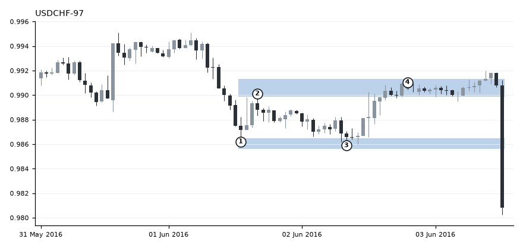
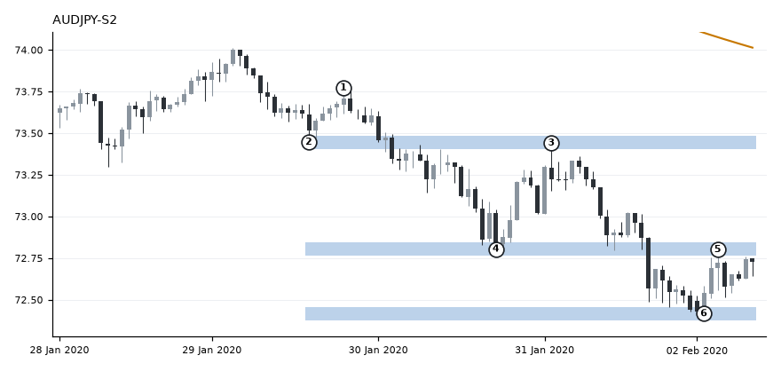
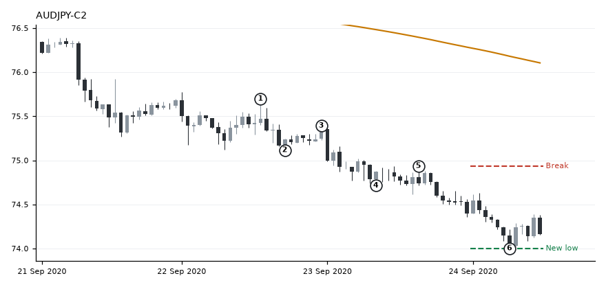
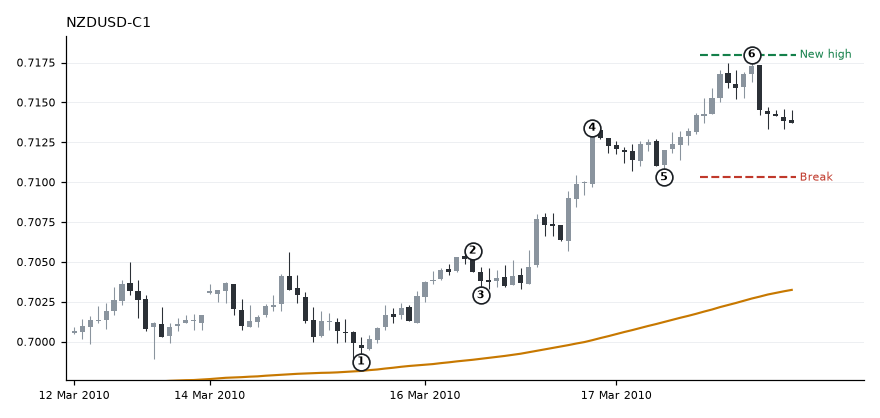
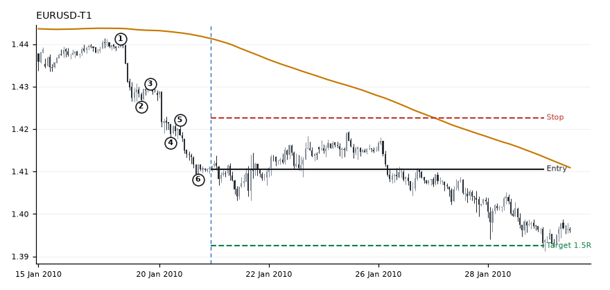

Every test, grouped by stage. Each page has the rules tested, an example chart, the results and a library of the real charts behind them.
Support and resistance zones
Daily zones built by rule, and simple levels, tested against random levels.

1-hour ranges
Two-sided ranges, then rules shaped by your own marks, tested on the majors and then on fresh crosses.

Clear 1-hour ranges
Failed 2026-11-02
Closed under this definition.

Your eye: marking ranges
Info 2026-11-02 to 11-03
The rules match your eye better each round, but the edge didn't improve.

Ranges from your marks
Failed 2026-11-02
Failed.

Ranges with the confirmation rule: the deciding test
Failed 2026-11-04
1-hour ranges closed.
Trend pullbacks
Pullbacks into zones and to the 50 EMA inside trends.

Trend structure
Your own trend definition: higher highs and higher lows, then continuation and whole trades.

Trend structure with retests
Too few 2026-11-04
Too rare to test.

Trend structure without retests
Too few 2026-11-04
Too rare to test.

Trend continuation, structure v3
Failed 2026-11-04
No continuation edge.

Trend structure trades at 1.5R
Failed 2026-11-04
125 trades, -0.077R a trade. $10,000 became $9,037.

Pullback to support with a rejection candle
Failed 2026-11-04
72 trades, -0.224R a trade. $10,000 became $8,389.